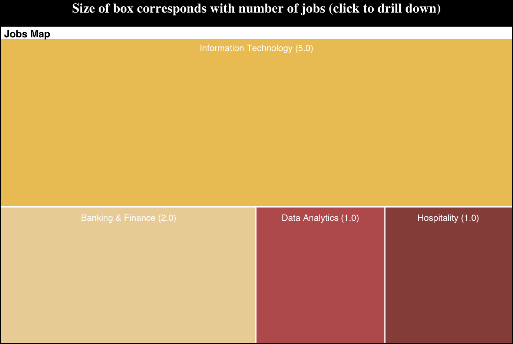
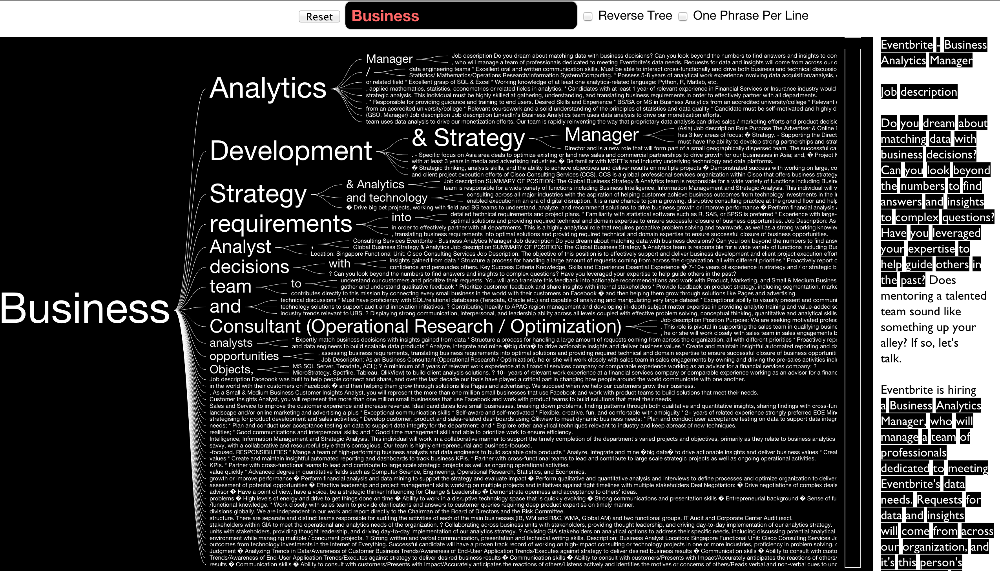
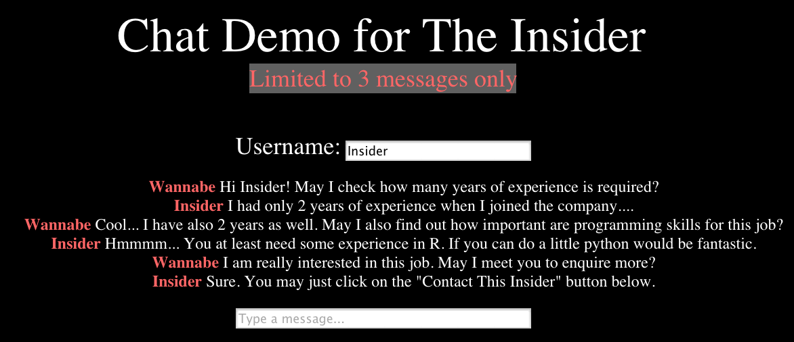

Welcome to The Insider features page
The Insider app is in essence a user-driven job portal. This differs strongly from the usual job portals/boards where the job posts are generally posted by the companies themselves. The problem with the usual practice is that there exists a disconnect between how companies look for replacements and how most job hunters search for jobs. As such, The Insider app seeks to bridge this gap by allowing users to have access to be on the "inside"

Three of the main features of the app are shown below. Note that these only display the bare functionalities required and should not be treated as the final products of the app
Jobs Map
Using an adaptation of the Treemap first designed by Ben Shneiderman during the 1990s, I have designed a Jobs Map that would allow users to quickly browse through jobs recommended to them. As the attributes of jobs are hierarchical in nature, this made it highly suitable for a tree map structure. To try out the app, please click on the below screenshot.
Jobs Tree
The Jobs Tree is effectively a word search tool that aims to visualize the connections between the search words and its related phrases. This will effectively allow users to search into the job descriptions and therefore eliminating possible discrepancies in the interpretation of job titles. In addition, the scroll window on the right displays the related job descriptions which allows for easier reference. To try out the app, please click on the below screenshot.
Jobs Chat
To induce the users to want to meet up with the Insiders, a limited chat function is implemented. As such, a chat app has been created and you may click on the screenshot below to try it.
Support or Contact
Having trouble with Pages? Check out the documentation at http://help.github.com/pages or contact support@github.com and we’ll help you sort it out.